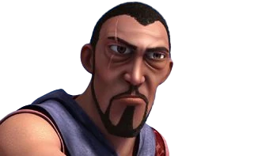

Chasseur de l'Aile de la Mort, serviteur du Dragon Roi
| Rôle | Chasseur de dragons, Serviteur du Dragon Roi |
| Affiliation | Ordre du Dragon Roi |
| Particularité | Obsédé par la capture du Dragon Roi |
Krogan est un chasseur de dragons fanatique qui sert un mystérieux Dragon Roi. Il cherche à capturer l'Aile de la Mort pour offrir à son maître un pouvoir ultime sur tous les dragons. Impitoyable et sans scrupule, il est prêt à sacrifier ses propres alliés pour atteindre son objectif. Sa conviction aveugle le rend particulièrement dangereux.